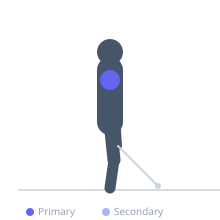
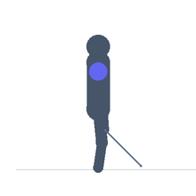

Exercise guide / Leaning Cable Front Raise
Leaning Cable Front Raise
The leaning cable front raise leans the torso away from a low cable pulley, increasing the range of motion of the anterior deltoid by starting with the working arm pulled behind the hip at a greater angle. The lean increases the stretch placed on the anterior deltoid and upper pec at the bottom while maintaining constant cable tension through the top, making it one of the most complete anterior deltoid loading options available.
Primary muscles
deltoid anterior
Secondary muscles
deltoid lateral
Stabilizers
erector spinae
Equipment
Cable Machine (High Pulley)


Starting position
- Stand with one side facing away from a low cable. Grasp the handle with the near hand. Lean the torso away from the cable — 10-20 degrees. The working arm is pulled behind the hip by the cable.
Setup
- Set the cable to the lowest position. Lean against a fixed object if balance is challenging initially.
Steps
- Step 1: Establish the lean with the cable pulling the arm behind the hip.
- Step 2: Raise the working arm forward and upward to shoulder height or slightly above.
- Step 3: Hold 1 second at peak.
- Step 4: Lower under control back to the extended behind-hip position.
- Step 5: Complete all reps then switch sides.
Coaching cues
- Lean creates the stretch — maintain it throughout
- No torso swing — stay leaned back
- Feel the front of the shoulder through the full arc
Breathing
- Exhale raising. Inhale lowering.
Range of motion
- Arm behind hip to shoulder height, using the full extended range created by the lean.
Tempo
- 2-1-2-0
Common mistakes
- Not leaning enough — the lean is what creates the extended starting position
- Torso swinging forward during the raise
Safety
- Moderate lean — do not lean so far that balance is compromised
- Light loads — anterior deltoid isolation
Training
- hypertrophy: 12–20 reps
- hypertrophy: 3–4 sets
- Rest: {'hypertrophy': 60}